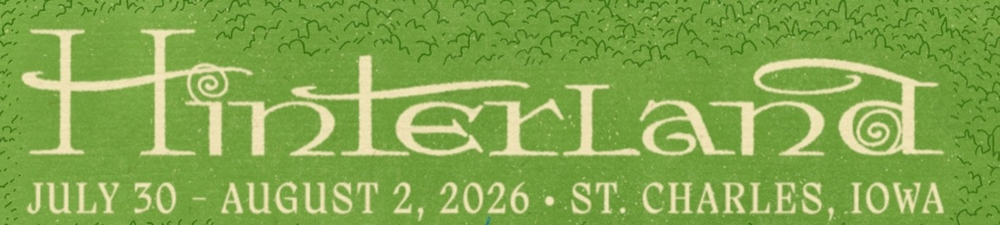
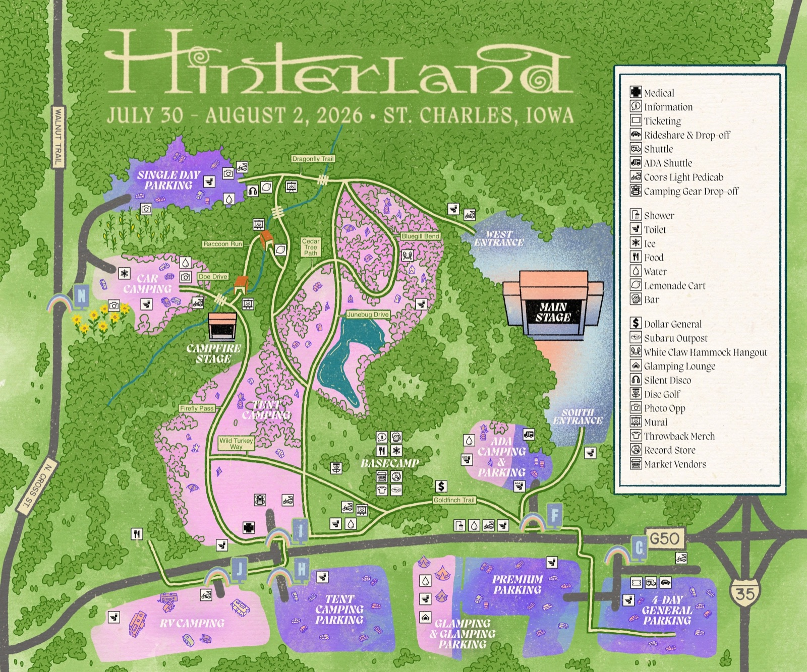

Unofficial fan guide · not the festival’s app
Diet labels are the festival's own claims, repeated here so you can find a stall — not an allergen guarantee. Always ask at the window. Vendor line-ups change; check the official page if something matters.

Location is off. Nothing is sent anywhere — it stays on your phone.
The map is an illustration, not a survey drawing — it’s stretched vertically and it straightens the road along the south edge. Positions here are worked out by matching it to real road geometry, and land within roughly 180 m. Good enough for “the campfire stage is west, keep walking”; not good enough for “it’s twelve paces that way.”
The Main Stage moved for 2026. A new permanent stage was built about half a mile east of where it used to be. Its position here comes from construction-era aerial photos, so it’s the least certain point on the map — treat it as ±150 m until someone stands there.
Tapping I’m standing at a landmark when you’re physically at a gate or stage corrects the offset for your phone and makes everything after it much better.
The hub in the campgrounds
Previews stream from Apple, so they need signal. Save them on wifi and they’ll play at the campsite.
Start times come from the official set times page. End times are estimates — the festival doesn’t publish them. Anywhere you see a ~, that time was worked out from when the next act starts on the same stage. Times are your phone’s local time, which is Central at the festival.
The app caches itself on first open, so the lineup, photos and maps work with no signal. Reception at the amphitheater is famously bad — open it once on wifi before you go.
Your stars are stored on this device only, and aren’t synced anywhere.
Set times, vendors, maps and Basecamp details from hinterlandiowa.com, captured July 25, 2026. If the festival changes anything after that, this app won’t know.
Official food & drink Official Basecamp page